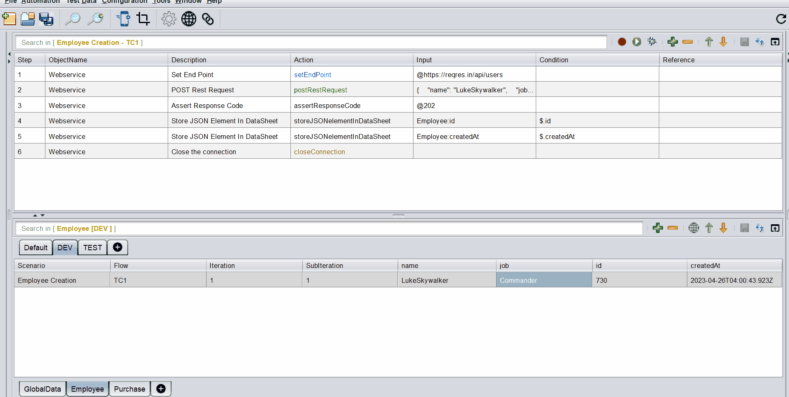

API Testing
API Testing is one of the strong suites of the tool. It allows us to fire requests, receive responses, validate the response status, response body and response tags.
It also allows us to store response tags which can be used for subsequent API calls or GUI flows. This makes API Testing and GUI Testing possible in a single flow coherently.
How to create an API Test Case?
-
A request should contain a
setEndPointaction. This action is always marked in Blue. This is where you put the endpoint to which the request is supposed to be fired. This action comes with an editor for convenience of data set up. -
You can have steps to add headers/authentication etc. (if required)
-
A request should contain an HTTP Method/Verb (
Post/Put/Get/Delete/Patch) . This action is always marked in Green. This also comes with an editor for convenience. -
You can have steps to validate/store response status codes, specific tags or even the entire response body.
-
A request should contain a
closeConnectionaction. This action is always marked in Brown.

The above is an example of a postRestRequest and then assertResponseCode followed by storeJSONelementInDataSheet
Payload Data Parameterization
Data Parameterization can be done using the built-in editor. If you mouse-hover on the Input column, corresponding to the Post/Put request steps as well as the setEndPoint step, an option to open up the Editor comes up.
Inside this editor, we can paste the entire Payload and then parameterize the specific JSON/XML tags based on our needs.
If we press [ctrl] + [SPACE], the list of all available DataSheets : ColumnNames along with all user-defined variables show up. We can then select the appropriate item from where we want to parameterize.
We need to press [esc] to close the editor
 The above image is a gif. So if its not moving, please reload the page
Assert/Store Response Tags
We can access the Response Tags using xpath for XMLs and jsonPath for JSONs.
The corresponding xpath or jsonPath for the tag, should be entered in the Condition column like as shown below :

Example of writing an Xpath :
<root xmlns:foo="http://www.foo.org/" xmlns:bar="http://www.bar.org">
<actors>
<actor id="1">Christian Bale</actor>
<actor id="2">Liam Neeson</actor>
<actor id="3">Michael Caine</actor>
</actors>
</root>
XPath for retrieving Liam Neeson is /root/actors/actor[2]/text() or simply //actor[2]/text()
Example of writing a JSONPath :
Example 1 :
{
"name":"TestName",
"salary":"12300",
"age":"29"
}
JSON Path for retrieving TestName is $.name
Example 2 :
{
"page": 2,
"per_page": 6,
"total": 12,
"total_pages": 2,
"data": [
{
"id": 7,
"email": "michael.lawson@ing.com",
"first_name": "Michael",
"last_name": "Lawson"
},
{
"id": 8,
"email": "lindsay.ferguson@ing.com",
"first_name": "Lindsay",
"last_name": "Ferguson"
},
{
"id": 9,
"email": "tobias.funke@ing.com",
"first_name": "Tobias",
"last_name": "Funke"
},
{
"id": 10,
"email": "byron.fields@ing.com",
"first_name": "Byron",
"last_name": "Fields"
},
{
"id": 11,
"email": "george.edwards@ing.com",
"first_name": "George",
"last_name": "Edwards"
},
{
"id": 12,
"email": "rachel.howell@ing.com",
"first_name": "Rachel",
"last_name": "Howell"
}
],
"additional": {
"url": "https://ing.com",
"text": "Happy Testing!"
}
}
JSON Path for retrieving byron.fields@ing.com is $.data[3].email [Index starts with 0]
To learn more about JSONPath visit this GitHub page.
Actions
There are 19 built-in Actions.
Please click the action-cloud below to check the details